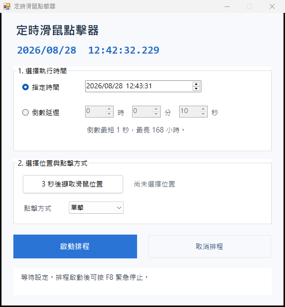

What the Windows version does
- Runs as a portable EXE with no installer.
- Schedules one click for a specific future date and time.
- Supports a 1-second to 168-hour delay that is not changed by wall-clock corrections.
- Captures a mouse coordinate after a three-second countdown.
- Performs one single or double left click.
- Provides on-screen cancel and an F8 emergency-stop path.
Safety and compatibility
The application is Per-Monitor V2 DPI aware, accepts negative coordinates used by monitors positioned left of the primary display, and stops if the display arrangement changes before execution. It runs with normal user privileges and cannot click higher-integrity administrator windows because Windows input isolation blocks that path.
Test safely: use a harmless target first. Keep the target window fixed, the desktop logged in and unlocked, and avoid payment, deletion, publishing, or other irreversible actions.
Is the Windows download safe?
The source uses Windows WinForms and user32.dll only. There are no third-party packages, network calls, telemetry, accounts, startup entries, or stored schedules. The EXE is not commercially code-signed, so SmartScreen may warn. Compare its SHA-256 value with the verification report or build it from source.
Windows 11 繁體中文摘要
Windows 版是免安裝 EXE，可設定指定日期時間或倒數延遲，三秒後擷取座標，並執行一次單擊或雙擊。它不連線網路、不蒐集資料，也不會在開機時自動執行。